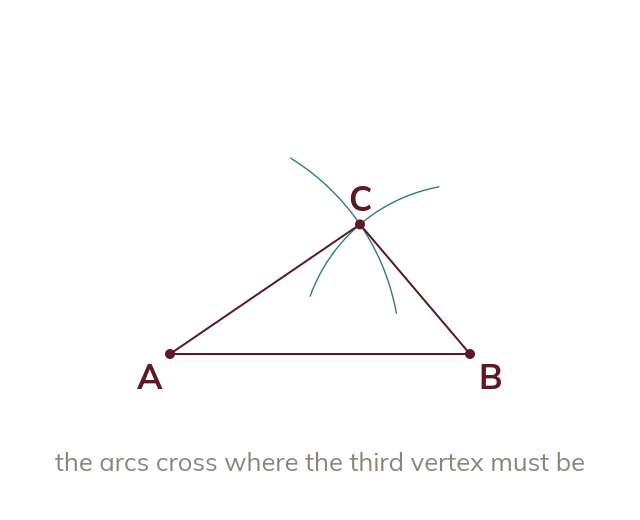

SSS construction
Three side lengths fix a triangle. Draw the longest as the base. Arcs of the other two lengths, from each end, cross at the third vertex.
Three side lengths fix a triangle completely, so the construction starts from the longest of them, drawn as a base line. Set compasses to the second length and draw an arc from one end; set to the third length and draw an arc from the other end. Where the two arcs cross is the third vertex.